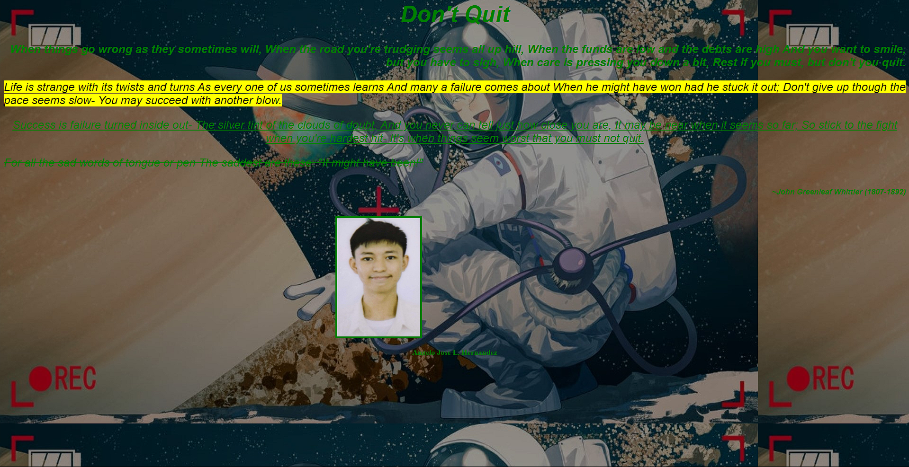

1ST QUARTER
CLASS OFFICERS
- Dominique - President
- Alexandria - Vice President
- Audre - Secretary
- Gabriel - Treasurer
- Julian - Auditor
- James - PIO
- Yllaiza and Paulo - Sergeant and Arms

MAPEH PREHISTORIC ART
This is one of the MAPEH artworks, where we try to replicate prehistoric art
ENGLISH DIALOGUE
This was a PT in English where we make a skit with a certain dialogue style
AP UNESCO
This was a PT in AP where we had to pick a place in the Philippines
MAPEH ENVIRONMENT
This is a collab PT between MAPEH and ICT,
where you have to make a video about awareness for the environment health
2ND QUARTER
ESP FILM FESTIVAL ENTRY
This is the ESP Film festival entry of our group (a.k.a. RT 4) and we somehow managed to get 2nd place


ICT PT 1
This is the first PT for ICT, thinking about it i could have done better but ehhh
MAPEH CHACHA
This is a PT in MAPEH, where we get assigned to be with
a girl partner (unexpected) and we would make
our own cha-cha dance, using the steps that sir
taught us(not really). I somehow managed to get
Hasbie as my partner, in which she is a decent
person but when people keep teasing us that we
are "interested" to each other?(she is indeed
cute but i dont have a "interest" on her) i kinda
hated that part and wished i can change partners,
but i guess she is kinda good at dancing which made
the pt easier so ehhh who even cares about annoying
jokes like that, got good grades and its kinda
worth it(probably my last words, as i got partnered
with her again in waltz ;-;)
VPOP
Nice event, however, i dont wanna talk about it(it was stressful for a simple event)
MR AND MS MVP
also a nice event, however, dont wanna talk about it(same reason as vpop)
MAPEH LINEAR PERSPECTIVE ART
Another artwork but using the strategy of
Linear Perspective.
MAPEH DRUGS POSTER
3RD QUARTER
VARIETY SHOW
This is a major PT of ESP(Collabed with so many subjects)
where we show our different talents in a 45-minute show
4TH QUARTER
MAPEH OPERA MAGAZINE
This PT is where we make a cover magazine,
about an opera featuring ourselves.
EPILOGUE
This is the end of my portfolio for ICT.
and this took kinda too long (heheheha)
and if you enjoyed this (somehow)
pls like and subscribe
And thank you for watching *epic outro